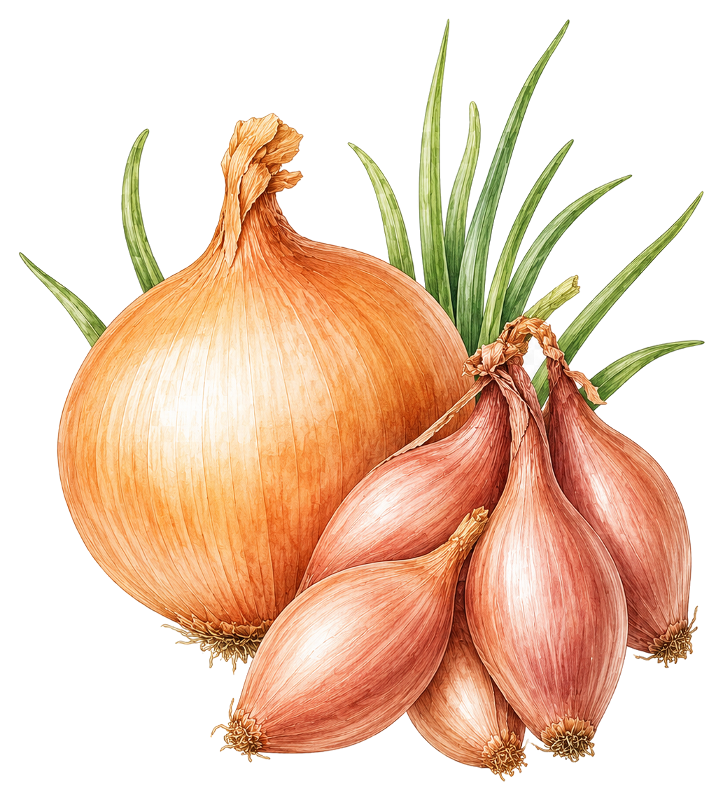
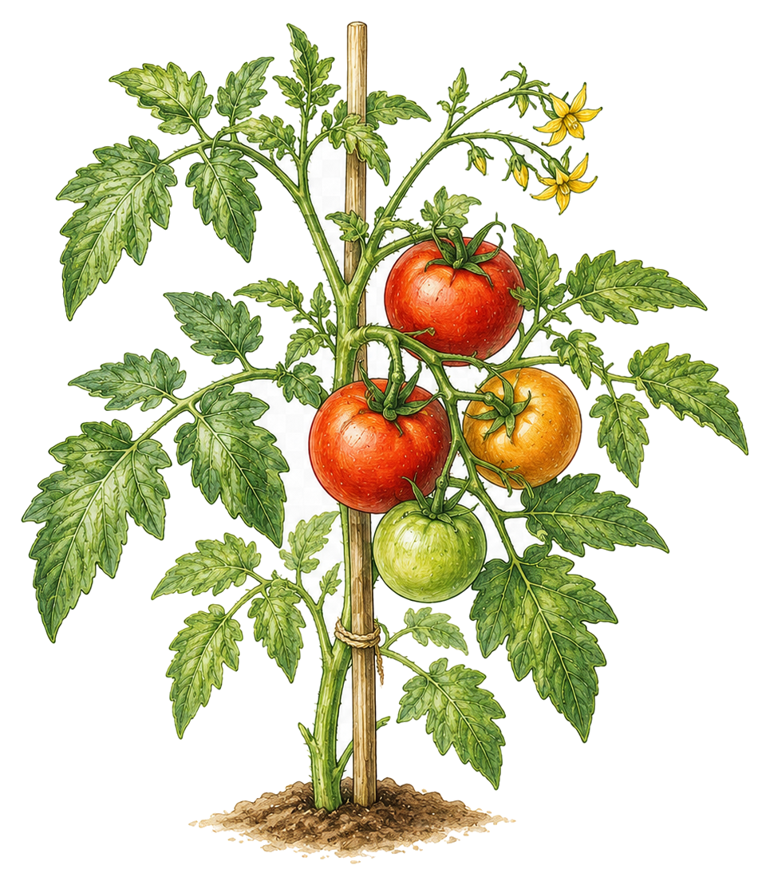
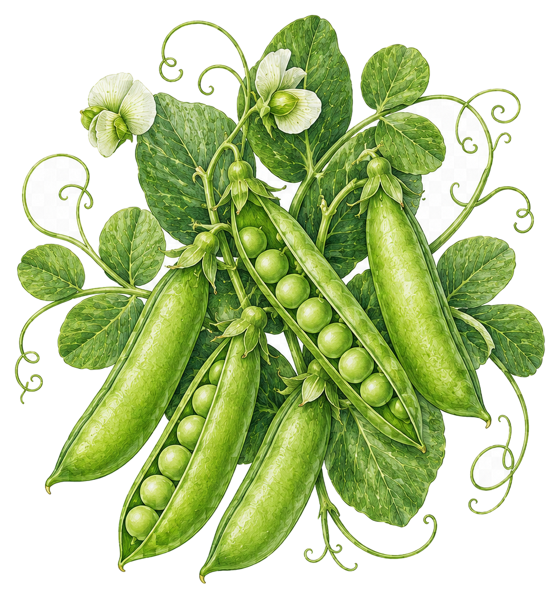

Save complete alternative (PNG)
· Existing botanical artwork and editable Inter lettering.


VEGETABLE
GROWING
CHEAT SHEETS

A peek inside →
Practical advice. At a glance.

 A peek inside →A peek inside →
A peek inside →A peek inside →